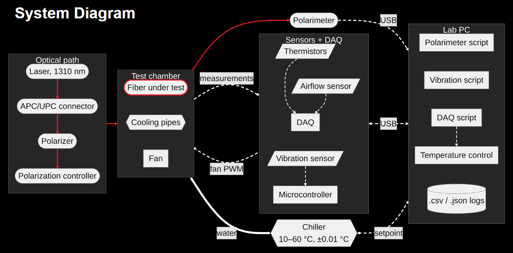

01 · AMD · HARVEY MUDD CLINIC · AUG 2026 – PRESENT
Fiber Optic Stress Testing, Automated Test Bench
For our AMD-sponsored clinic, I’m designing and building a modular benchtop rig that reproduces real field stressors on single-mode fiber. A LabJack T4 DAQ closes the loop on heaters and linear actuators inside a heat-controlled chamber, so temperature and vibration become repeatable, quantifiable inputs for characterizing polarization-dependent loss and mode dispersion.
Test engineering
Closed-loop control
DOE
See project details →

System diagram · optical path, test chamber, sensors + DAQ, lab PC